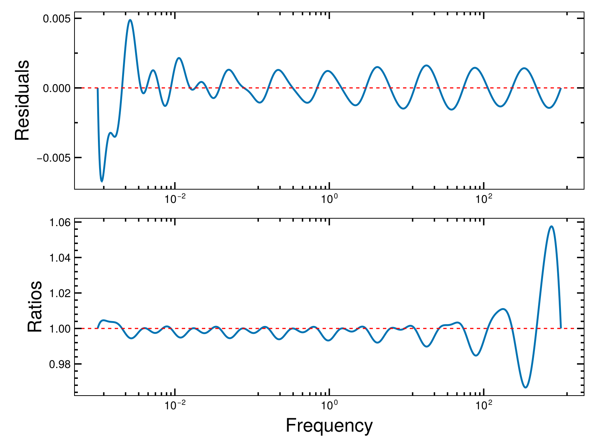
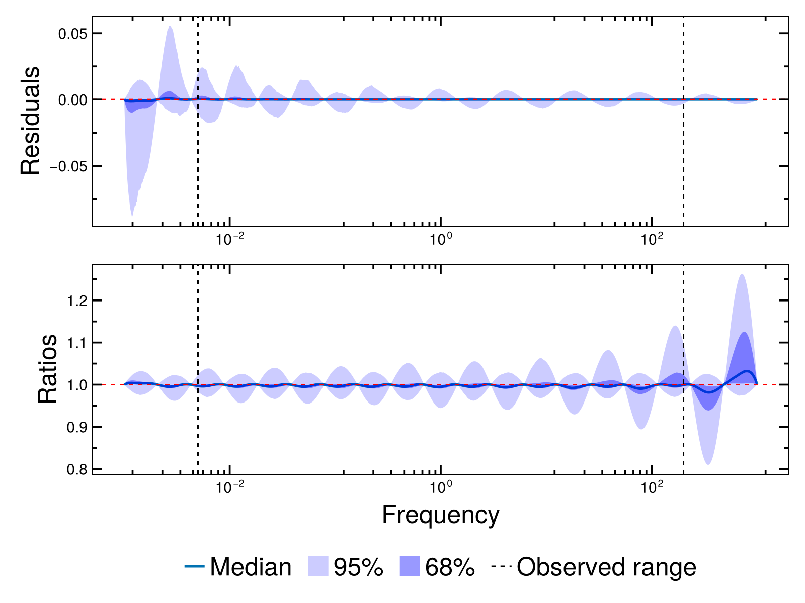
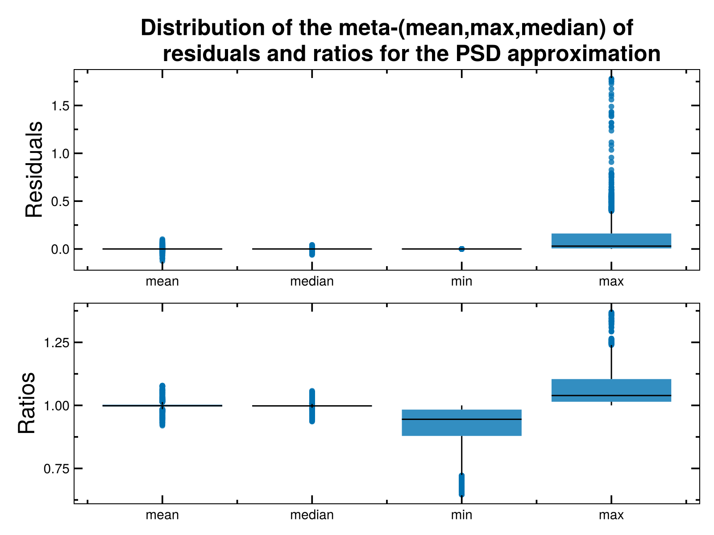

Modelling
Modelling the power spectral density
We use SingleBendingPowerLaw and DoubleBendingPowerLaw to model the power spectral density of the random process generating the time series data.
using Plots
using Pioran
𝓟1 = SingleBendingPowerLaw(1., .1, 3.4)
𝓟2 = SingleBendingPowerLaw(.4, 1e-2, 3.)
𝓟3 = SingleBendingPowerLaw(.1, 3., 2.4)
𝓟1d = DoubleBendingPowerLaw(1.2,1e-3,2.4,1.1,4.2)
𝓟2d = DoubleBendingPowerLaw(0.2,1e-2,1.3,24.3,3.1)
𝓟3d = DoubleBendingPowerLaw(0.5,1e-3,2.1,91.2,4.9)
f = 10 .^ range(-4, stop=3, length=1000)
l = @layout [a b]
p1 = plot(f,[𝓟1(f),𝓟2(f),𝓟3(f)],xlabel="Frequency (day^-1)",ylabel="Power Spectral Density",legend=false,framestyle = :box,xscale=:log10,yscale=:log10,ylims=(1e-15,1e1),lw=2)
p2 = plot(f,[𝓟1d(f),𝓟2d(f),𝓟3d(f)],xlabel="Frequency (day^-1)",legend=false,framestyle = :box,xscale=:log10,yscale=:log10,ylims=(1e-15,1e1),lw=2)
plot(p1,p2,layout=l,size=(700,300),grid=false,left_margin=2Plots.mm,bottom_margin=20Plots.px,title=["Single bending power-law" "Double bending power-law"])Approximating the power spectral density
To obtain the covariance function, we approximate the power spectral density by a sum of basis functions $\psi(f)$. At the moment, we use either of the following basis functions:
\[\begin{align}\begin{split} \psi_4(f) = \frac{1}{1+f^4}\\ \psi_6(f) = \frac{1}{1+f^6} \end{split} \end{align}\]
These basis functions have analytical Fourier transforms and are used to approximate the covariance function. The Fourier transform of the basis functions are given by
\[\begin{align}\begin{split} \phi_4(\tau) &= \exp\left(-\pi\sqrt{2}\tau\right) \left(\cos\left(\pi\sqrt{2}\tau\right)+\sin\left(\pi\sqrt{2}\tau\right)\right)\\ \phi_6(\tau) &=\pi/3\exp{\left(-2\pi \tau\right)}+\exp{\left(-\pi\tau\right)}\left(\pi/3\cos\left(\pi\sqrt{3}\tau\right)+\pi/\sqrt{3}\sin\left(\pi\sqrt{3}\tau\right)\right)\end{split} \end{align}\]
We need to specify the frequency range f0 and fM over which the approximation is performed. We also need to specify the number of basis functions J to use. Once this is done the frequency grid is defined as:
\[f_j=f_\mathrm{start}\left({f_\mathrm{stop}}/{f_\mathrm{start}}\right)^{j/(J-1)}\]
The approximation of the power spectral density is then given by
\[\begin{align} \mathcal{P}(f)\simeq \tilde{\mathcal{P}}(f)&= \sum\limits_{j=0}^{J-1} a_j \psi(f/f_j)\\ \mathcal{R}(\tau)\simeq \tilde{\mathcal{R}}(\tau)&= \sum\limits_{j=0}^{J-1} a_j f_j \phi(\tau f_j) \end{align}\]
Adding the constraint that the approximation and the true power spectrum must be equal on the grid of frequencies gives a linear system of $J$ equations for the coefficients $a_j$. This system can be written with a Toeplitz matrix $B$ and a vector $\boldsymbol{a}$ as:
\[\begin{align} \boldsymbol{p} = \boldsymbol{a} B \quad \text{where } B_{ij}=\psi(f_i/f_j) \text{ and } p_j = \mathcal{P}(f_j) \end{align}\]
The values of $p_j$" are divided by $p_0$ so that the values of $a_j$ are not too high, what we are interested in is the amplitude of the covariance function which gives the variance of the process - the integral of the power spectrum.
Visually, the approximation can be seen as follows:
f0, fM = 1e-3, 1e3
𝓟 = SingleBendingPowerLaw(.4, 1e-1, 3.)
f = 10 .^ range(-3, stop=3, length=1000)
psd_approx = Pioran.approximated_psd(f, 𝓟, f0, fM, n_components=20,basis_function="SHO",individual=true)
plot(f,𝓟(f)/𝓟(f0),xscale=:log10,yscale=:log10,label="True PSD",xlabel="Frequency (day^-1)",ylabel="Power Spectral Density",lw=2,framestyle = :box,grid=false)
plot!(f,sum(psd_approx,dims=2),label="Approximated PSD",lw=2)
plot!(f,psd_approx,label=nothing,color=:black,alpha=.5,ylims=(1e-15,1e1),ls=:dot)Limitations and diagnostics for the approximation
This approximation is limited by the steepness of the basis functions, this means that if the power spectrum you want to approximate is steeper than the basis functions, the approximation may fail. Equivalently, the basis functions are flat at low frequencies, modelling a rising power spectrum at low frequencies can also be difficult.
In order to check the quality of the approximation, we can compute the residuals and ratios between the true and approximated power spectrum. First, we need to define the range of allowed values for each parameter to check. As we adopt a Bayesian workflow, one can use the prior distribution to define the range of allowed values for each parameter. This can be done as follows:
using Distributions
using Random
rng = MersenneTwister(1234)
min_f_b, max_f_b = 1e-3, 1e3
function prior_transform(cube)
α₁ = quantile(Uniform(0.0, 1.25), cube[1])
f₁ = quantile(LogUniform(min_f_b, max_f_b), cube[2])
α₂ = quantile(Uniform(α₁, 4.0), cube[3])
variance = quantile(LogNormal(-1,2), cube[4])
return [α₁, f₁, α₂, variance]
end
P = 2000
unif = rand(rng, 4, P)
priors = mapreduce(permutedims, hcat, [prior_transform(unif[:, i]) for i in 1:P]')
l = @layout [a b ; c d]
p1 = histogram(priors[1,:],xlabel="α₁")
bins = 10.0 .^LinRange( log10(minimum(priors[2,:])),log10(quantile(priors[2,:],.99)),30)
p2 = histogram(priors[2,:],bins=bins,xaxis=(:log10,(bins[1],bins[end])),xlabel="f₁")
p3 = histogram(priors[3,:],xlabel="α₂")
bins = 10.0 .^LinRange( log10(minimum(priors[4,:])),log10(quantile(priors[4,:],1)),30)
p4 = histogram(priors[4,:],xlabel="variance",bins=bins,xaxis=(:log10,(bins[1],bins[end])))
plot(p1,p2,p3,p4,layout=l,size=(700,300),grid=false,left_margin=2Plots.mm,bottom_margin=20Plots.px,legend=false)We can then use the function run_diagnostics to assess the quality of the approximation. The first argument is an array containing the parameters of the power spectral density, the second argument is the variance of the process. f_min and f_max are the minimum and maximum frequencies of the time series, this is to show the window of observed frequencies in the plots.
using CairoMakie
CairoMakie.activate!(type = "png")
f_min, f_max = 1e-3 * 5, 1e3 / 5
figs = run_diagnostics(priors[1:3, :], priors[4, :], f0, fM, SingleBendingPowerLaw, f_min,f_max, n_components=20, basis_function="SHO")3-element Vector{Makie.Figure}:
Figure()
Figure()
Figure()The following plots are produced: The mean of the residuals and ratios as a function of frequency.
The quantiles of the residuals and ratios as a function of frequency.
The distribution of the mean, median and maximum values of the frequency-averaged residuals and ratios.
Using these three diagnostics we can see that a SingleBendingPowerLaw with the chosen prior distributions can be well approximated with 20 SHO basis functions.
Building the Gaussian process
Now that we have checked that approximation hold for our choice of priors we can build the Gaussian process.
Building the covariance function
The covariance function using the approximation of the power spectral density is obtained using the function approx. We need to specify the frequency range f0 and fM over which the approximation is performed, the number of basis functions J to use, and the variance of the process - integral of the power spectrum. One can also give the type of basis function to use, the default is SHO which corresponds to the basis function $\psi_4$, DRWCelerite corresponds to $\psi_6$.
𝓟 = SingleBendingPowerLaw(.4, 1e-1, 3.)
variance = 2.2
𝓡 = approx(𝓟, f0, fM, 20, variance, basis_function="SHO")Pioran.SumOfSemiSeparable{Vector{SHO}}(SHO[SHO(0.030322884084373655, 0.006283185307179587, 0.7071067811865475), SHO(0.03429389994791425, 0.01300077798978621, 0.7071067811865475), SHO(0.06636972847744523, 0.026900404822785624, 0.7071067811865475), SHO(0.07719531985729854, 0.05566065201622968, 0.7071067811865475), SHO(0.17751466762713336, 0.11516957470645954, 0.7071067811865475), SHO(0.21627779258745894, 0.23830175281093008, 0.7071067811865475), SHO(0.9843646300036841, 0.49307923153749883, 0.7071067811865475), SHO(0.5112341247119052, 1.0202490149810555, 0.7071067811865475), SHO(0.07747022163556128, 2.111036089117155, 0.7071067811865475), SHO(0.01938464540109837, 4.36802516259994, 0.7071067811865475), SHO(0.004246466642079087, 9.038047203203158, 0.7071067811865475), SHO(0.0010188893176592427, 18.700967647060686, 0.7071067811865475), SHO(0.0002347661005093104, 38.69488431222888, 0.7071067811865475), SHO(5.519225616520317e-5, 80.06505867476409, 0.7071067811865475), SHO(1.2850746501276161e-5, 165.6656618706443, 0.7071067811865475), SHO(3.0063038738625077e-6, 342.78512970963675, 0.7071067811865475), SHO(7.013475482744144e-7, 709.2697655220816, 0.7071067811865475), SHO(1.6454614039358522e-7, 1467.5770816250977, 0.7071067811865475), SHO(3.703941006001531e-8, 3036.619626561795, 0.7071067811865475), SHO(1.1366240534046279e-8, 6283.185307179586, 0.7071067811865475)], [0.030322884084373655, 0.03429389994791425, 0.06636972847744523, 0.07719531985729854, 0.17751466762713336, 0.21627779258745894, 0.9843646300036841, 0.5112341247119052, 0.07747022163556128, 0.01938464540109837, 0.004246466642079087, 0.0010188893176592427, 0.0002347661005093104, 5.519225616520317e-5, 1.2850746501276161e-5, 3.0063038738625077e-6, 7.013475482744144e-7, 1.6454614039358522e-7, 3.703941006001531e-8, 1.1366240534046279e-8], [0.030322884084373655, 0.03429389994791425, 0.06636972847744523, 0.07719531985729854, 0.17751466762713336, 0.21627779258745894, 0.9843646300036841, 0.5112341247119052, 0.07747022163556128, 0.01938464540109837, 0.004246466642079087, 0.0010188893176592427, 0.0002347661005093104, 5.519225616520317e-5, 1.2850746501276161e-5, 3.0063038738625077e-6, 7.013475482744144e-7, 1.6454614039358522e-7, 3.703941006001531e-8, 1.1366240534046279e-8], [0.0044428829381583665, 0.00919293827727864, 0.019021458666855024, 0.03935802448594069, 0.08143718726130823, 0.16850478538124908, 0.34865966828241723, 0.7214249969919999, 1.4927279339442692, 3.0886602128678895, 6.390864466069064, 13.223581037986847, 27.361415094406, 56.6145459250245, 117.14331291849025, 242.38568970759445, 501.52946089125646, 1037.73370633107, 2147.214329826007, 4442.882938158366], [0.0044428829381583665, 0.00919293827727864, 0.019021458666855024, 0.03935802448594069, 0.08143718726130823, 0.16850478538124908, 0.34865966828241723, 0.7214249969919999, 1.4927279339442692, 3.0886602128678895, 6.390864466069064, 13.223581037986847, 27.361415094406, 56.6145459250245, 117.14331291849025, 242.38568970759445, 501.52946089125646, 1037.73370633107, 2147.214329826007, 4442.882938158366])Building the Gaussian process
The Gaussian process is built using the type ScalableGP. If the mean of the process $\mu$ is known, it can be given as a first argument. Otherwise, the mean is assumed to be zero.
μ = 1.3
f = ScalableGP(μ, 𝓡)ScalableGP{AbstractGPs.GP{AbstractGPs.ConstMean{Float64}, Pioran.SumOfSemiSeparable{Vector{SHO}}}, Pioran.SumOfSemiSeparable{Vector{SHO}}}(AbstractGPs.GP{AbstractGPs.ConstMean{Float64}, Pioran.SumOfSemiSeparable{Vector{SHO}}}(AbstractGPs.ConstMean{Float64}(1.3), Pioran.SumOfSemiSeparable{Vector{SHO}}(SHO[SHO(0.030322884084373655, 0.006283185307179587, 0.7071067811865475), SHO(0.03429389994791425, 0.01300077798978621, 0.7071067811865475), SHO(0.06636972847744523, 0.026900404822785624, 0.7071067811865475), SHO(0.07719531985729854, 0.05566065201622968, 0.7071067811865475), SHO(0.17751466762713336, 0.11516957470645954, 0.7071067811865475), SHO(0.21627779258745894, 0.23830175281093008, 0.7071067811865475), SHO(0.9843646300036841, 0.49307923153749883, 0.7071067811865475), SHO(0.5112341247119052, 1.0202490149810555, 0.7071067811865475), SHO(0.07747022163556128, 2.111036089117155, 0.7071067811865475), SHO(0.01938464540109837, 4.36802516259994, 0.7071067811865475), SHO(0.004246466642079087, 9.038047203203158, 0.7071067811865475), SHO(0.0010188893176592427, 18.700967647060686, 0.7071067811865475), SHO(0.0002347661005093104, 38.69488431222888, 0.7071067811865475), SHO(5.519225616520317e-5, 80.06505867476409, 0.7071067811865475), SHO(1.2850746501276161e-5, 165.6656618706443, 0.7071067811865475), SHO(3.0063038738625077e-6, 342.78512970963675, 0.7071067811865475), SHO(7.013475482744144e-7, 709.2697655220816, 0.7071067811865475), SHO(1.6454614039358522e-7, 1467.5770816250977, 0.7071067811865475), SHO(3.703941006001531e-8, 3036.619626561795, 0.7071067811865475), SHO(1.1366240534046279e-8, 6283.185307179586, 0.7071067811865475)], [0.030322884084373655, 0.03429389994791425, 0.06636972847744523, 0.07719531985729854, 0.17751466762713336, 0.21627779258745894, 0.9843646300036841, 0.5112341247119052, 0.07747022163556128, 0.01938464540109837, 0.004246466642079087, 0.0010188893176592427, 0.0002347661005093104, 5.519225616520317e-5, 1.2850746501276161e-5, 3.0063038738625077e-6, 7.013475482744144e-7, 1.6454614039358522e-7, 3.703941006001531e-8, 1.1366240534046279e-8], [0.030322884084373655, 0.03429389994791425, 0.06636972847744523, 0.07719531985729854, 0.17751466762713336, 0.21627779258745894, 0.9843646300036841, 0.5112341247119052, 0.07747022163556128, 0.01938464540109837, 0.004246466642079087, 0.0010188893176592427, 0.0002347661005093104, 5.519225616520317e-5, 1.2850746501276161e-5, 3.0063038738625077e-6, 7.013475482744144e-7, 1.6454614039358522e-7, 3.703941006001531e-8, 1.1366240534046279e-8], [0.0044428829381583665, 0.00919293827727864, 0.019021458666855024, 0.03935802448594069, 0.08143718726130823, 0.16850478538124908, 0.34865966828241723, 0.7214249969919999, 1.4927279339442692, 3.0886602128678895, 6.390864466069064, 13.223581037986847, 27.361415094406, 56.6145459250245, 117.14331291849025, 242.38568970759445, 501.52946089125646, 1037.73370633107, 2147.214329826007, 4442.882938158366], [0.0044428829381583665, 0.00919293827727864, 0.019021458666855024, 0.03935802448594069, 0.08143718726130823, 0.16850478538124908, 0.34865966828241723, 0.7214249969919999, 1.4927279339442692, 3.0886602128678895, 6.390864466069064, 13.223581037986847, 27.361415094406, 56.6145459250245, 117.14331291849025, 242.38568970759445, 501.52946089125646, 1037.73370633107, 2147.214329826007, 4442.882938158366])), Pioran.SumOfSemiSeparable{Vector{SHO}}(SHO[SHO(0.030322884084373655, 0.006283185307179587, 0.7071067811865475), SHO(0.03429389994791425, 0.01300077798978621, 0.7071067811865475), SHO(0.06636972847744523, 0.026900404822785624, 0.7071067811865475), SHO(0.07719531985729854, 0.05566065201622968, 0.7071067811865475), SHO(0.17751466762713336, 0.11516957470645954, 0.7071067811865475), SHO(0.21627779258745894, 0.23830175281093008, 0.7071067811865475), SHO(0.9843646300036841, 0.49307923153749883, 0.7071067811865475), SHO(0.5112341247119052, 1.0202490149810555, 0.7071067811865475), SHO(0.07747022163556128, 2.111036089117155, 0.7071067811865475), SHO(0.01938464540109837, 4.36802516259994, 0.7071067811865475), SHO(0.004246466642079087, 9.038047203203158, 0.7071067811865475), SHO(0.0010188893176592427, 18.700967647060686, 0.7071067811865475), SHO(0.0002347661005093104, 38.69488431222888, 0.7071067811865475), SHO(5.519225616520317e-5, 80.06505867476409, 0.7071067811865475), SHO(1.2850746501276161e-5, 165.6656618706443, 0.7071067811865475), SHO(3.0063038738625077e-6, 342.78512970963675, 0.7071067811865475), SHO(7.013475482744144e-7, 709.2697655220816, 0.7071067811865475), SHO(1.6454614039358522e-7, 1467.5770816250977, 0.7071067811865475), SHO(3.703941006001531e-8, 3036.619626561795, 0.7071067811865475), SHO(1.1366240534046279e-8, 6283.185307179586, 0.7071067811865475)], [0.030322884084373655, 0.03429389994791425, 0.06636972847744523, 0.07719531985729854, 0.17751466762713336, 0.21627779258745894, 0.9843646300036841, 0.5112341247119052, 0.07747022163556128, 0.01938464540109837, 0.004246466642079087, 0.0010188893176592427, 0.0002347661005093104, 5.519225616520317e-5, 1.2850746501276161e-5, 3.0063038738625077e-6, 7.013475482744144e-7, 1.6454614039358522e-7, 3.703941006001531e-8, 1.1366240534046279e-8], [0.030322884084373655, 0.03429389994791425, 0.06636972847744523, 0.07719531985729854, 0.17751466762713336, 0.21627779258745894, 0.9843646300036841, 0.5112341247119052, 0.07747022163556128, 0.01938464540109837, 0.004246466642079087, 0.0010188893176592427, 0.0002347661005093104, 5.519225616520317e-5, 1.2850746501276161e-5, 3.0063038738625077e-6, 7.013475482744144e-7, 1.6454614039358522e-7, 3.703941006001531e-8, 1.1366240534046279e-8], [0.0044428829381583665, 0.00919293827727864, 0.019021458666855024, 0.03935802448594069, 0.08143718726130823, 0.16850478538124908, 0.34865966828241723, 0.7214249969919999, 1.4927279339442692, 3.0886602128678895, 6.390864466069064, 13.223581037986847, 27.361415094406, 56.6145459250245, 117.14331291849025, 242.38568970759445, 501.52946089125646, 1037.73370633107, 2147.214329826007, 4442.882938158366], [0.0044428829381583665, 0.00919293827727864, 0.019021458666855024, 0.03935802448594069, 0.08143718726130823, 0.16850478538124908, 0.34865966828241723, 0.7214249969919999, 1.4927279339442692, 3.0886602128678895, 6.390864466069064, 13.223581037986847, 27.361415094406, 56.6145459250245, 117.14331291849025, 242.38568970759445, 501.52946089125646, 1037.73370633107, 2147.214329826007, 4442.882938158366]))At the moment, the GP does not include the measurement variance σ² and the time values t. This is done in the next step.
σ² = yerr .^ 2
fx = f(t, σ²)AbstractGPs.FiniteGP{ScalableGP{AbstractGPs.GP{AbstractGPs.ConstMean{Float64}, Pioran.SumOfSemiSeparable{Vector{SHO}}}, Pioran.SumOfSemiSeparable{Vector{SHO}}}, Vector{Float64}, LinearAlgebra.Diagonal{Float64, Vector{Float64}}}(
f: ScalableGP{AbstractGPs.GP{AbstractGPs.ConstMean{Float64}, Pioran.SumOfSemiSeparable{Vector{SHO}}}, Pioran.SumOfSemiSeparable{Vector{SHO}}}(AbstractGPs.GP{AbstractGPs.ConstMean{Float64}, Pioran.SumOfSemiSeparable{Vector{SHO}}}(AbstractGPs.ConstMean{Float64}(1.3), Pioran.SumOfSemiSeparable{Vector{SHO}}(SHO[SHO(0.030322884084373655, 0.006283185307179587, 0.7071067811865475), SHO(0.03429389994791425, 0.01300077798978621, 0.7071067811865475), SHO(0.06636972847744523, 0.026900404822785624, 0.7071067811865475), SHO(0.07719531985729854, 0.05566065201622968, 0.7071067811865475), SHO(0.17751466762713336, 0.11516957470645954, 0.7071067811865475), SHO(0.21627779258745894, 0.23830175281093008, 0.7071067811865475), SHO(0.9843646300036841, 0.49307923153749883, 0.7071067811865475), SHO(0.5112341247119052, 1.0202490149810555, 0.7071067811865475), SHO(0.07747022163556128, 2.111036089117155, 0.7071067811865475), SHO(0.01938464540109837, 4.36802516259994, 0.7071067811865475), SHO(0.004246466642079087, 9.038047203203158, 0.7071067811865475), SHO(0.0010188893176592427, 18.700967647060686, 0.7071067811865475), SHO(0.0002347661005093104, 38.69488431222888, 0.7071067811865475), SHO(5.519225616520317e-5, 80.06505867476409, 0.7071067811865475), SHO(1.2850746501276161e-5, 165.6656618706443, 0.7071067811865475), SHO(3.0063038738625077e-6, 342.78512970963675, 0.7071067811865475), SHO(7.013475482744144e-7, 709.2697655220816, 0.7071067811865475), SHO(1.6454614039358522e-7, 1467.5770816250977, 0.7071067811865475), SHO(3.703941006001531e-8, 3036.619626561795, 0.7071067811865475), SHO(1.1366240534046279e-8, 6283.185307179586, 0.7071067811865475)], [0.030322884084373655, 0.03429389994791425, 0.06636972847744523, 0.07719531985729854, 0.17751466762713336, 0.21627779258745894, 0.9843646300036841, 0.5112341247119052, 0.07747022163556128, 0.01938464540109837, 0.004246466642079087, 0.0010188893176592427, 0.0002347661005093104, 5.519225616520317e-5, 1.2850746501276161e-5, 3.0063038738625077e-6, 7.013475482744144e-7, 1.6454614039358522e-7, 3.703941006001531e-8, 1.1366240534046279e-8], [0.030322884084373655, 0.03429389994791425, 0.06636972847744523, 0.07719531985729854, 0.17751466762713336, 0.21627779258745894, 0.9843646300036841, 0.5112341247119052, 0.07747022163556128, 0.01938464540109837, 0.004246466642079087, 0.0010188893176592427, 0.0002347661005093104, 5.519225616520317e-5, 1.2850746501276161e-5, 3.0063038738625077e-6, 7.013475482744144e-7, 1.6454614039358522e-7, 3.703941006001531e-8, 1.1366240534046279e-8], [0.0044428829381583665, 0.00919293827727864, 0.019021458666855024, 0.03935802448594069, 0.08143718726130823, 0.16850478538124908, 0.34865966828241723, 0.7214249969919999, 1.4927279339442692, 3.0886602128678895, 6.390864466069064, 13.223581037986847, 27.361415094406, 56.6145459250245, 117.14331291849025, 242.38568970759445, 501.52946089125646, 1037.73370633107, 2147.214329826007, 4442.882938158366], [0.0044428829381583665, 0.00919293827727864, 0.019021458666855024, 0.03935802448594069, 0.08143718726130823, 0.16850478538124908, 0.34865966828241723, 0.7214249969919999, 1.4927279339442692, 3.0886602128678895, 6.390864466069064, 13.223581037986847, 27.361415094406, 56.6145459250245, 117.14331291849025, 242.38568970759445, 501.52946089125646, 1037.73370633107, 2147.214329826007, 4442.882938158366])), Pioran.SumOfSemiSeparable{Vector{SHO}}(SHO[SHO(0.030322884084373655, 0.006283185307179587, 0.7071067811865475), SHO(0.03429389994791425, 0.01300077798978621, 0.7071067811865475), SHO(0.06636972847744523, 0.026900404822785624, 0.7071067811865475), SHO(0.07719531985729854, 0.05566065201622968, 0.7071067811865475), SHO(0.17751466762713336, 0.11516957470645954, 0.7071067811865475), SHO(0.21627779258745894, 0.23830175281093008, 0.7071067811865475), SHO(0.9843646300036841, 0.49307923153749883, 0.7071067811865475), SHO(0.5112341247119052, 1.0202490149810555, 0.7071067811865475), SHO(0.07747022163556128, 2.111036089117155, 0.7071067811865475), SHO(0.01938464540109837, 4.36802516259994, 0.7071067811865475), SHO(0.004246466642079087, 9.038047203203158, 0.7071067811865475), SHO(0.0010188893176592427, 18.700967647060686, 0.7071067811865475), SHO(0.0002347661005093104, 38.69488431222888, 0.7071067811865475), SHO(5.519225616520317e-5, 80.06505867476409, 0.7071067811865475), SHO(1.2850746501276161e-5, 165.6656618706443, 0.7071067811865475), SHO(3.0063038738625077e-6, 342.78512970963675, 0.7071067811865475), SHO(7.013475482744144e-7, 709.2697655220816, 0.7071067811865475), SHO(1.6454614039358522e-7, 1467.5770816250977, 0.7071067811865475), SHO(3.703941006001531e-8, 3036.619626561795, 0.7071067811865475), SHO(1.1366240534046279e-8, 6283.185307179586, 0.7071067811865475)], [0.030322884084373655, 0.03429389994791425, 0.06636972847744523, 0.07719531985729854, 0.17751466762713336, 0.21627779258745894, 0.9843646300036841, 0.5112341247119052, 0.07747022163556128, 0.01938464540109837, 0.004246466642079087, 0.0010188893176592427, 0.0002347661005093104, 5.519225616520317e-5, 1.2850746501276161e-5, 3.0063038738625077e-6, 7.013475482744144e-7, 1.6454614039358522e-7, 3.703941006001531e-8, 1.1366240534046279e-8], [0.030322884084373655, 0.03429389994791425, 0.06636972847744523, 0.07719531985729854, 0.17751466762713336, 0.21627779258745894, 0.9843646300036841, 0.5112341247119052, 0.07747022163556128, 0.01938464540109837, 0.004246466642079087, 0.0010188893176592427, 0.0002347661005093104, 5.519225616520317e-5, 1.2850746501276161e-5, 3.0063038738625077e-6, 7.013475482744144e-7, 1.6454614039358522e-7, 3.703941006001531e-8, 1.1366240534046279e-8], [0.0044428829381583665, 0.00919293827727864, 0.019021458666855024, 0.03935802448594069, 0.08143718726130823, 0.16850478538124908, 0.34865966828241723, 0.7214249969919999, 1.4927279339442692, 3.0886602128678895, 6.390864466069064, 13.223581037986847, 27.361415094406, 56.6145459250245, 117.14331291849025, 242.38568970759445, 501.52946089125646, 1037.73370633107, 2147.214329826007, 4442.882938158366], [0.0044428829381583665, 0.00919293827727864, 0.019021458666855024, 0.03935802448594069, 0.08143718726130823, 0.16850478538124908, 0.34865966828241723, 0.7214249969919999, 1.4927279339442692, 3.0886602128678895, 6.390864466069064, 13.223581037986847, 27.361415094406, 56.6145459250245, 117.14331291849025, 242.38568970759445, 501.52946089125646, 1037.73370633107, 2147.214329826007, 4442.882938158366]))
x: [0.0, 5.5, 7.25, 7.5, 7.75, 10.25, 10.5, 13.5, 16.5, 20.0 … 721.0, 721.25, 724.0, 725.0, 725.25, 725.75, 726.75, 727.75, 728.5, 729.5]
Σy: [0.0007769427202587575 0.0 … 0.0 0.0; 0.0 0.0008096922961612274 … 0.0 0.0; … ; 0.0 0.0 … 0.0007682230802508954 0.0; 0.0 0.0 … 0.0 0.0006084949733623623]
)
The log-likelihood of the Gaussian process given the data y can be computed using the function logpdf from the Distributions package.
logpdf(fx, y)-243.24825422512637